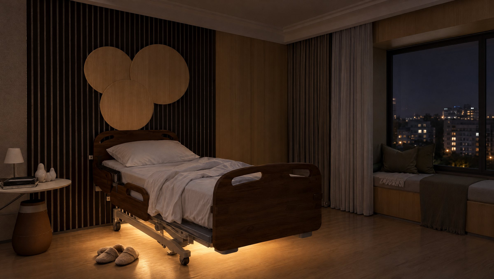
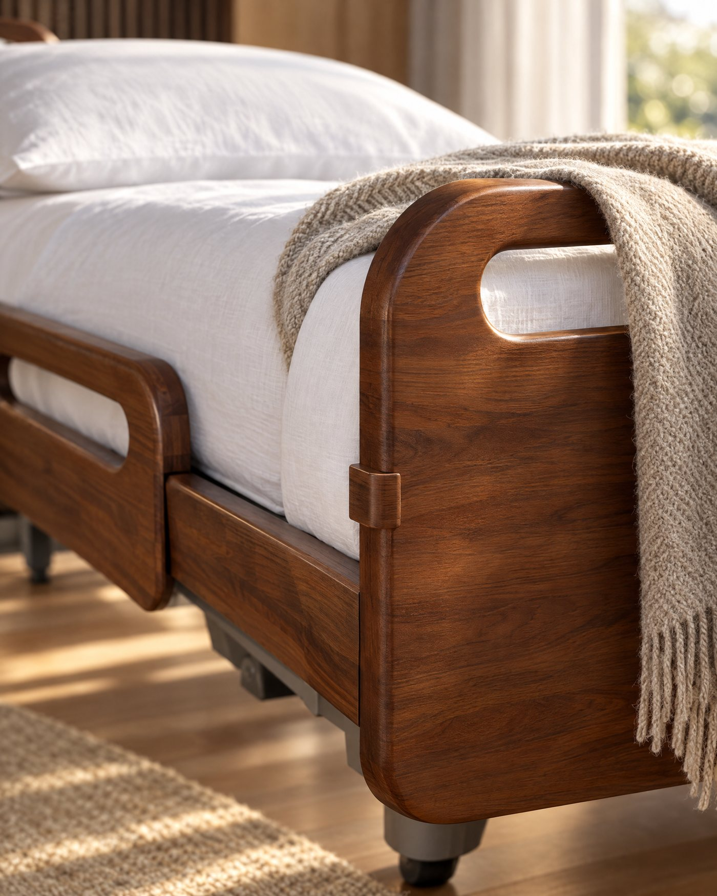
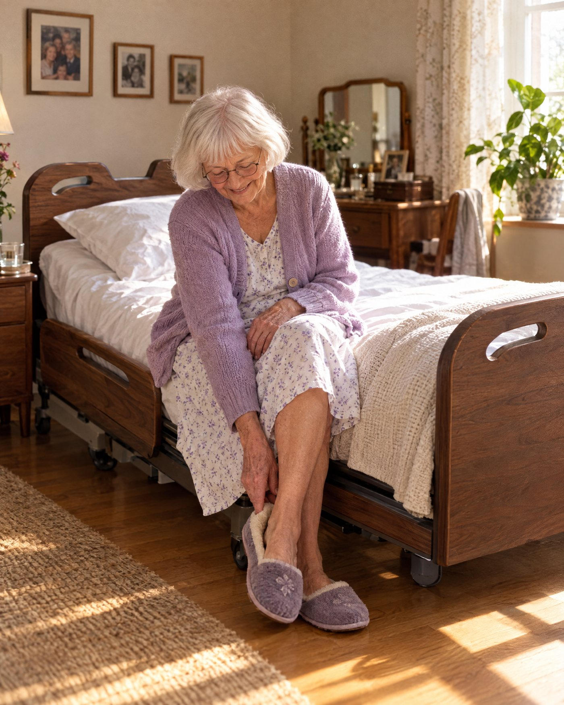
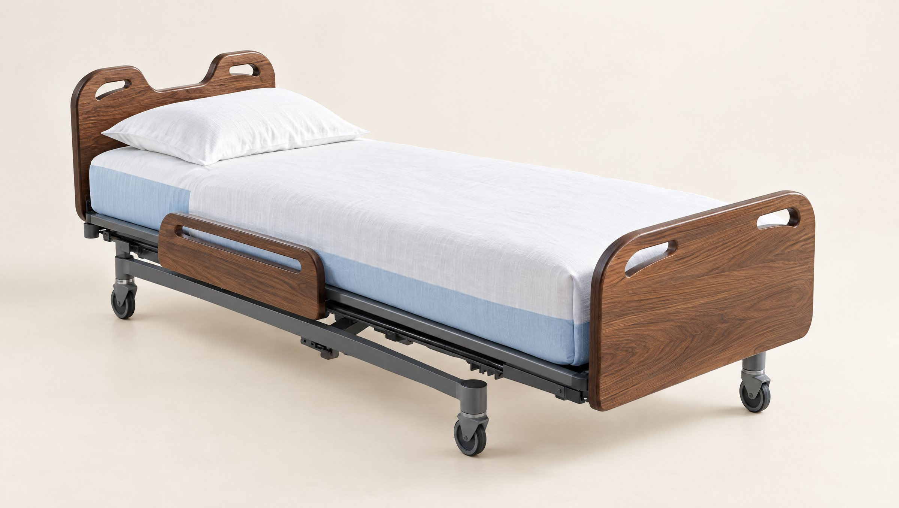
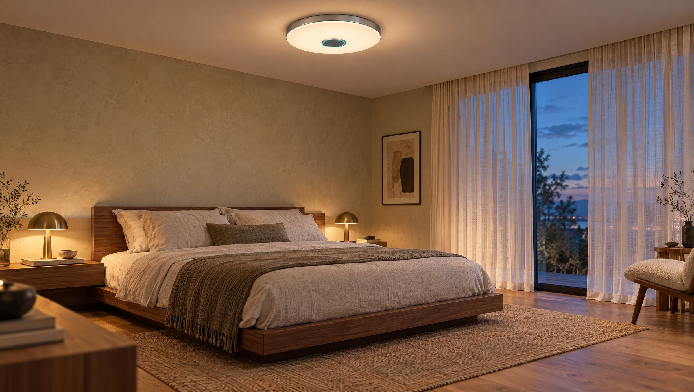

Feet on the floor
A low light comes on under the bed the moment someone sits up to get out. Most night falls start in the dark.

Solid walnut, proper linen, and every sensor a good night nurse would want. None of it on show.
Most care beds make a bedroom look like a ward. This one makes it look like a bedroom.


A low light comes on under the bed the moment someone sits up to get out. Most night falls start in the dark.
Read through the mattress, all night.
Hours, restlessness and time out of bed, so a slow change shows up early.
A quiet note to the carer. No alarm, no fuss, no waiting until morning.
Tracked by the bed itself. Nobody has to stand on scales.
And the people who love her know that she did.


Concept design. Specifications in development.

The bed knows the night. The lights know the rest of the house.